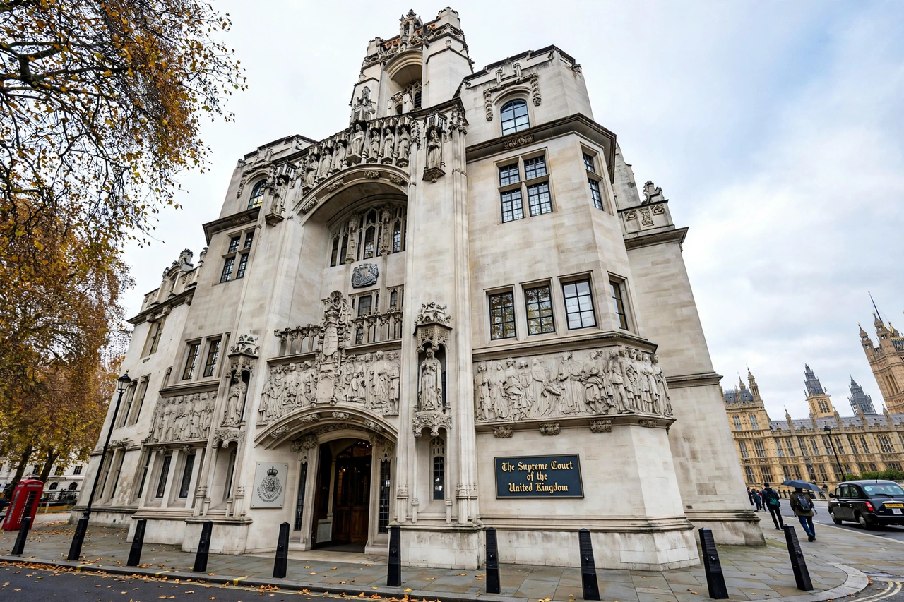

Leave to appeal, also called permission to appeal, is the permission granted by a court for a party to appeal a decision when an appeal does not lie as of right. The requirement allows higher courts to filter out unmeritorious or insignificant cases and to reserve their time for questions of general public importance. Leave may be granted or refused by the court whose decision is challenged, by the court to which the appeal would go, or sequentially by both.
Typical criteria include whether the case raises an arguable point of law of general public importance, whether there is a reasonable prospect of success, whether conflicting decisions below need resolution, and whether some other compelling reason justifies a further appeal. Second appeals — appeals of an appellate decision — usually face a stricter test, often requiring an important point of principle or practice. Refusal of leave is usually final and frequently given without detailed reasons; in many systems it does not imply that the lower decision was correct.
Permission to appeal is required for most civil appeals under the Civil Procedure Rules, and appeals reach the UK Supreme Court only with permission of the court below or of the Supreme Court itself, on the basis of a point of law of general public importance. In criminal cases, appeal to the Court of Appeal generally requires leave of the court or a certificate from the trial judge that the case is fit for appeal. Comparable requirements formerly governed appeals to the Judicial Committee of the Privy Council from Commonwealth jurisdictions.
Appeals to the Supreme Court of Canada are almost entirely by leave, granted where a question is of public importance or raises an important issue of law. The High Court of Australia similarly requires "special leave", granted sparingly by reference to statutory criteria including whether the proceedings raise a question of public importance. These discretionary dockets resemble, in function, the writ of certiorari of the US Supreme Court.
Leave requirements form part of the machinery of appellate jurisdiction: they sit between the trial court's original jurisdiction and full appellate review, and shape the development of precedent by determining which questions the highest courts decide.
See also: Appeal, Appellate jurisdiction, Certiorari.